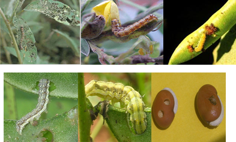
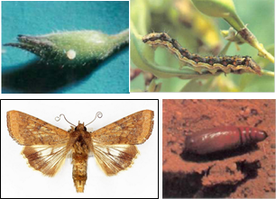

| Home |
| RED GRAM & CHICKPEA |
| 1. Gram pod borer |
| 2. blue butterfly |
| 3. grass blue butterfly |
| 4. plume moth |
| 5. Spotted pod borer |
| 6. spiny pod borer |
| 7. field bean pod borer |
| 8. pod fly |
| 9. stem fly |
| 10. eriophyid mite |
| 11. Blister beetle |
| 12. pod wasp |
| 13. flower webber |
| integrated Pest Management |
| questions |
| download notes |
PESTS OF PULSES - RED GRAM & CHICKPEA :: Major Pests :: Gram Pod Borer
1. Gram pod borer: Helicoverpa armigera (Noctuidae: Lepidotera)
Distribution and status: World wide
Host range: Cotton, sorghum, lablab, pea, chillies, groundnut, tobacco, okra, maize, tomato, soybean, safflower, gram, etc.
Damage symptoms: It is a polyphagous species and is an important pest on pulses. Caterpillar first feeds on foliage; later bores into pods and feeds on seeds.
 |
Larva is seen feeding with the head alone thrust inside the parts and the rest of the body hanging out. Boreholes on pods, absence of seeds on pods and defoliation in early stages are the symptoms of attack.
ETL: One larva per five plants in the pod initiation stage
Bionomics: Adult moth is greenish to brown with a ‘V’ shaped speck on forewings and dull black border on the hind wing. Eggs are laid on the host plants singly. The egg period is 7 days. Full grown larva is 2” long, greenish with dark brown gray lines and dark and pale bands. It shows colour variation from greenish to brown. The larval duration is 14 days. It pupates in soil for 10 days. One generation is completed in 28 days under favorable conditions.
 |
Management
- Grow Helicoverpa resistant varieties like,
Red gram: T 21, Bori, BDN 2, ICPL 332, ICPL 84060, ICPL 88039, PPE 45-2, ICP 19640, ICP 7035, MA 2, Pant A1, BSMR 1, JG 315 and JG 74 for central zone and ICCV 7
Chickpea: ICCV&, ICCVIO, Dulia
- Install bird perches @ 50/ha to pick the larvae
- Set up light trap to monitor, attract and kill the moths
- Set up pheromone traps @ 12 nos./ha
- Inundative release of egg parasite Trichogramma spp. and egg larval parasites, Chelonus blackburnii
- Spray nuclear polyhedrosis virus (NPV) @ 500 LE/ha in 0.1% teepol.
- Apply any one of insecticides at 25 kg/ha - endosulfan 1.5 D, quinalphos 1.5 D, carbaryl 5D or spray any of the following insecticides in 700-1000 L of water per ha.
|
|
|
|
|
|
|
|
|
|
|
|